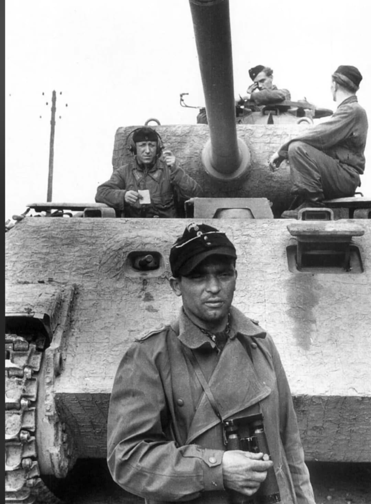
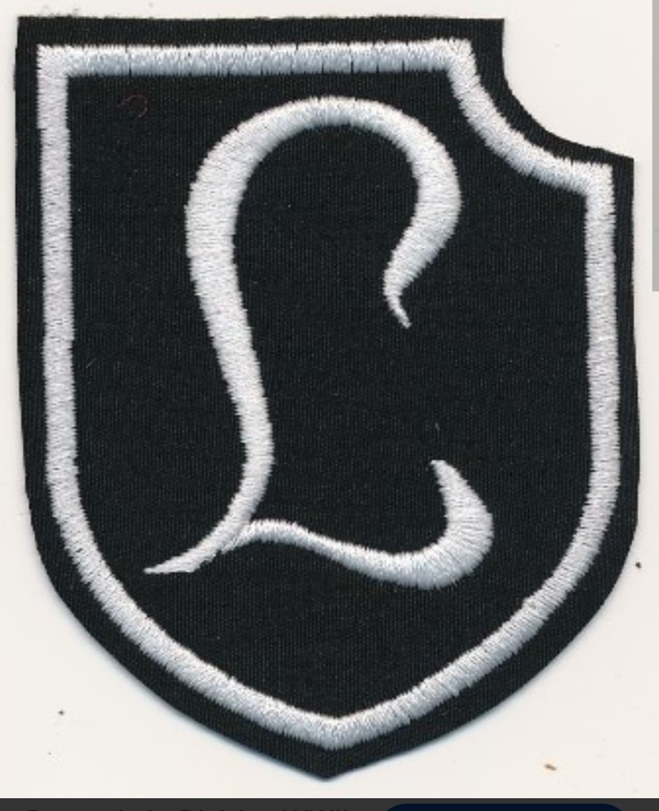
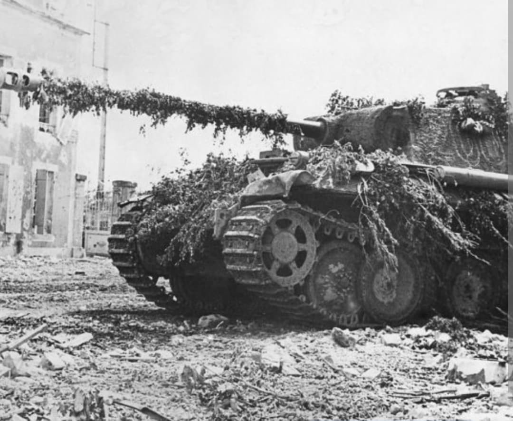

La division d'élite des écoles de blindés : du choc de Normandie et de l'opération Cobra aux âpres combats des Ardennes

La Panzer-Lehr-Division (division blindée d'instruction) était l'une des formations mécanisées les plus puissantes, modernes et redoutables de la Wehrmacht durant la Seconde Guerre mondiale.
Formée au début de l'année 1944 à partir des instructeurs et des élèves des écoles de troupes blindées allemandes les plus élitistes, elle disposait d'un équipement ultra-complet et d'un encadrement d'experts, constituant un adversaire redoutable pour les forces alliées dès le Débarquement de Normandie.
Créée en France occupée au début de 1944 sous le commandement du lieutenant-général **Fritz Bayerlein** (ancien chef d'état-major de Rommel en Afrique), la division rassemble l'élite de l'enseignement tactique militaire allemand.
Contrairement à la majorité des divisions de la Wehrmacht, la Panzer-Lehr est entièrement motorisée ou mécanisée dès sa création, dotée d'une proportion exceptionnelle de véhicules blindés modernes (Panther, Panzer IV, Sturmgeschütz et half-tracks Sd.Kfz. 251). Son insigne distinctif représente une lettre majuscule « L » stylisée en gothique ou une patte de brique spécifique selon les sous-unités.

Engagée d'urgence sur le front normand au lendemain du D-Day, la Panzer-Lehr-Division subit immédiatement la violence des frappes aériennes alliées massives lors de sa remontée vers le front, perdant une partie importante de son matériel avant même d'arriver au contact.
Malgré ces destructions, elle mène des contre-offensives acharnées dans le secteur de Tilly-sur-Seulles et autour de Villers-Bocage, infligeant de lourdes pertes aux troupes britanniques et canadiennes grâce à l'expertise de ses équipages de chars.

En juillet 1944, positionnée face à l'offensive américaine **Cobra** à l'ouest de Saint-Lô, la division se trouve au cœur du tapis de bombes stratégiques massif déclenché par l'US Army Air Forces, ce qui réduit temporairement sa puissance opérationnelle à néant.
Reconstituée à l'automne, elle participe à la dernière grande offensive allemande lors de la **bataille des Ardennes** en décembre 1944, tentant désespérément de percer vers Bastogne avant d'être repoussée et finalement anéantie sur le front de l'Est au printemps 1945.
Page du Musée HOP WW2 – Section Unités & Divisions